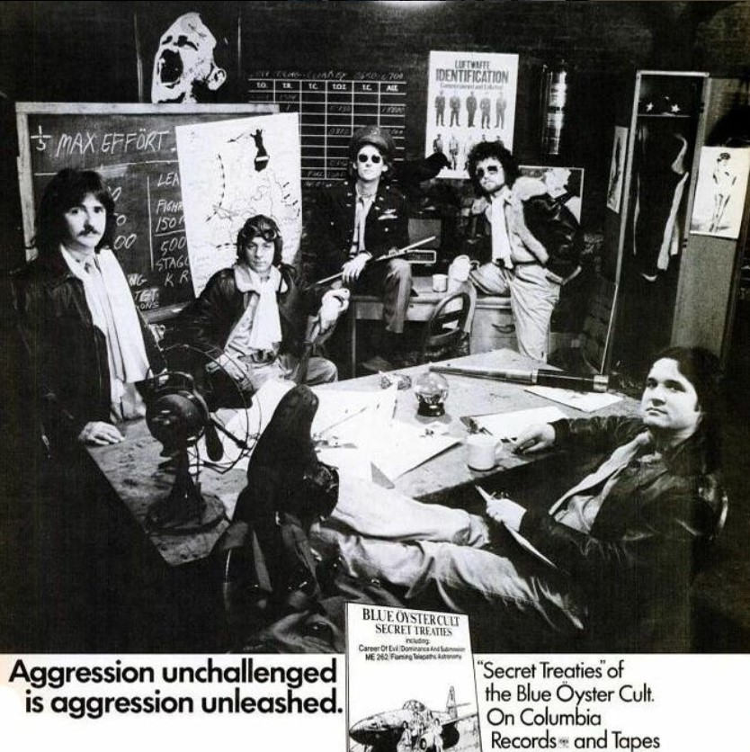

Introduction to Black and White Years
The "Black and White Years" is a time period between 1972-1974 during which the band's album artwork is only (mostly) those colors. The self-titled debut: Blue Öyster Cult, second album: Tyranny and Mutation, and third album: Secret Treaties are all black and white album covers. This time period is probably one of the most controversial eras for the band. The first two album covers are made by Bill Gawlik, someone that is very controversial, both because he can be interpreted as being problematic and because his identity is unknown. Second, the press started to label the band as a "neo-nazi" group. Many of their early songs, especially from the "Secret Treaties" ablum are in the perspective of German soldiers during World War II. Also, some of the cryptic promotion photos used for the band depict the band members being associated with the German military directly. The band has refuted this saying it was simply for advertising and at that time when they were still small, they held the idea that any press is good press. They also argued that they started out in the New York City area which has a high population of Jewish people, at least half of the band is also Jewish. Once you look deeper, though, it becomes apparent that the group is most certainly not an extremeist group, but instead some song content is based on their manager's (Sandy Pearlman) epic poem "The Soft Doctrines of Imaginos". In the end, the band did move away from the Nazi imagery because someone at a concert started to praise Hitler and extreme bad press.
